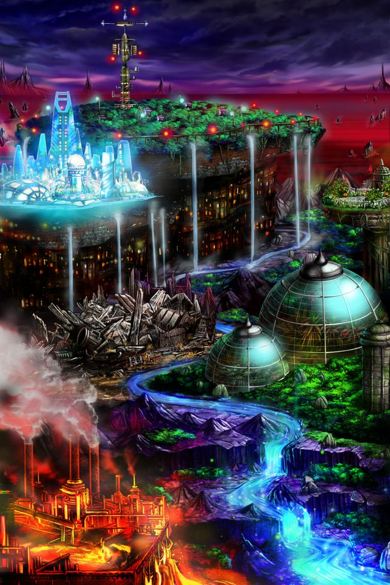

Shou-chan……新たな地ラクシュルトへの道を開いておいたよ。
私なら大丈夫！こっちのことは任せておいて♪だからShou-chanも自分のことを信じて戦ってね！
Shou-chanならきっと大丈夫だって私、信じてるから……。


モーラ
フフッ、どうしました？ 突然、私が現れて驚きましたか？
モーラ
今はあなたをどうこうするつもりは ありません。
モーラ
この先のガドウム溶鉱炉で 集まっていましたよ。
モーラ
ですので、私がこの地を支配する魔神に ついてお話ししてさしあげます。
モーラ
この地を支配する魔神の名は 魔蟲樹神モルデリム。
モーラ
以前にベイオルグの地を支配していた 魔神と同様に
モーラ
そのせいか、この地には醜い施設が たくさんあるのです。
モーラ
それよりもあなた方にとって問題なのは 彼女はその技術をさらに手に入れるため
モーラ
エルガイアへの侵攻を 計画していることでしょうか。
モーラ
彼女はこの地の奥にある“気象管理塔”と 呼ばれる場所を根城としていますわ。
モーラ
フフッ、私があなたにこんな話をするのが 意外ですか？
モーラ
どちらにせよあなたは彼女と 戦うことになるのでしょうから……。
モーラ
それではまたお会いしましょう。 女神の加護を受けた召喚師さん。